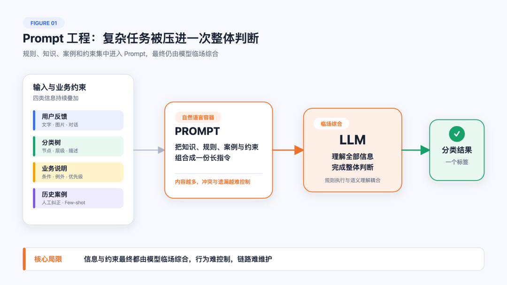
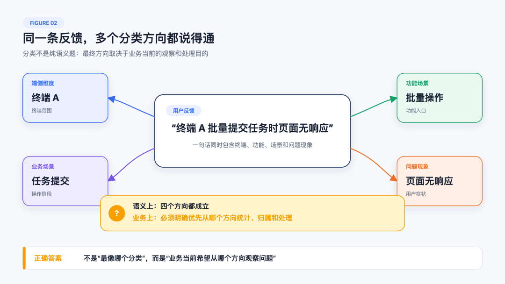
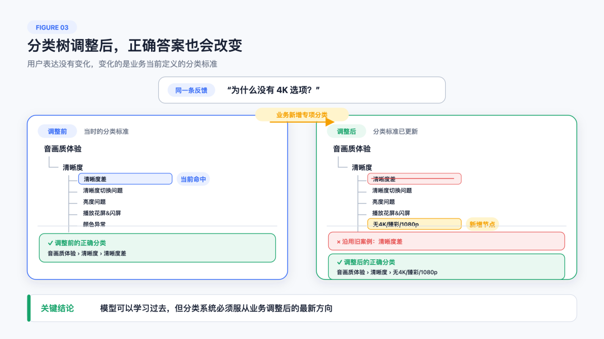
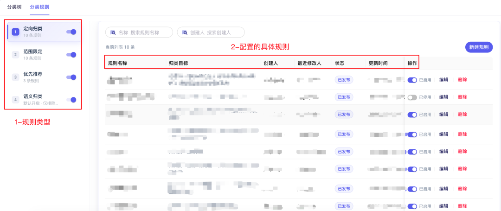
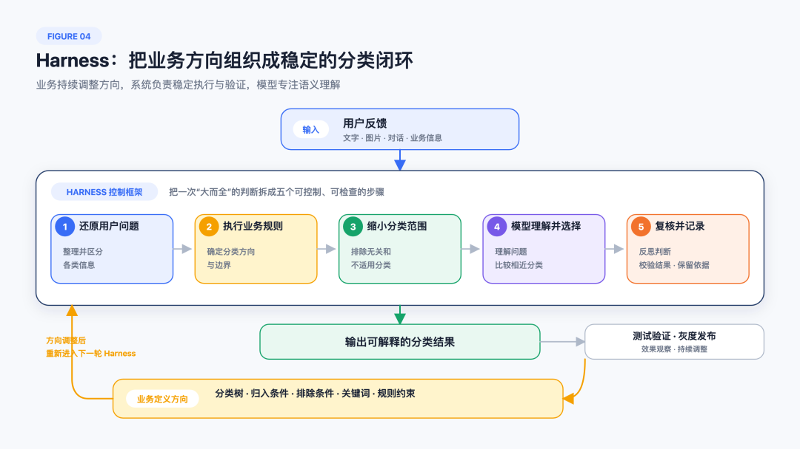

随着业务场景和分类标准不断变化，越来越多的规则、边界和例外被写入 Prompt 或定制链路，反馈分类逐渐变得难以控制和维护。为此，我们重构了分类系统，重新划分业务、Harness 与模型的职责：业务通过完善分类树定义和配置规则来决定分类方向，Harness 将这些业务定义组织成稳定的分类流程，模型则专注于理解用户问题并完成语义判断，让分类结果能够持续跟上业务变化，最终形成由业务定义方向、系统稳定执行的可控的智能。
01
每天，海量产品评价、吐槽、求助和建议从不同渠道涌来。它们本应是驱动产品进化的重要养料，但理解和消化这些信息本身，就需要投入大量人力：运营团队需要持续整理和分类，产品经理需要从零散建议中寻找线索，开发人员则要在模糊描述与海量日志之间定位问题。
AiSee 是面向各类业务的用户反馈分析平台，聚焦用户反馈处理中的核心痛点，通过 AI 汇聚、理解和分析海量反馈，帮助团队更高效地发现问题、分析问题并推动改进。经过多年实践，AiSee 已在多个业务场景中落地，并逐步形成从反馈感知到分析的完整闭环。
其中，反馈分类是 AiSee 最基础、使用最频繁的能力之一，但它并不只是给文本贴一个标签。它首先将海量、零散的用户表达聚合成清晰的问题分布，帮助产品运营发现异常、定位场景并判断优先级；当问题进入处理阶段，分类结果又承担着明确归属、连接责任团队和推动任务下发的作用；在产品完成优化后，同一套分类数据还可以继续观察相关反馈是否下降，验证问题是否真正得到解决。
因此，分类树本质上是业务观察问题、组织协作和推动改进的一套共同语言。分类一旦不准确或不稳定，影响的不只是一张报表，还可能造成问题定位和任务流转的偏差。
随着大模型具备越来越强的语言理解能力，反馈分类看起来像一道很适合交给模型的问题：给它一条用户反馈和一棵分类树，让它从中选出最匹配的一个分类。Prompt 中再补充角色、业务背景、判断要求和历史案例，模型很快就能给出看起来合理的结果。
Prompt 工程由此帮助我们跨过了“模型能不能分类”的门槛。但当分类进入真实、复杂且持续变化的业务场景后，我们逐渐发现，问题已经不只是模型能否给出答案。随着分类节点、判断条件和例外场景不断增加，越来越多的业务经验被写入 Prompt，越来越多的特殊情况通过定制链路处理。系统分支持续膨胀，规则散落在不同位置，一次调整可能牵动多个环节，理解、验证和维护成本也越来越高。
模型侧的问题是行为难以控制，工程侧的问题是系统难以维护。 我们需要重新思考：能否不再依靠更长的 Prompt 和更多的定制逻辑解决问题，而是建立一套统一的控制框架，让业务能够定义分类方向，让模型专注完成自己擅长的判断？

02
2.1 Prompt 工程解决了“能不能分类”
在分类树较小、业务规则较少时，通过 Prompt 补充更多背景和案例，往往能够直接改善效果。模型不了解业务，就补充业务知识；相似分类容易混淆，就增加判断说明；输出不稳定，就补充格式要求和示例；遇到新的 badcase，再把新的经验写进 Prompt。
这些做法都有效，问题在于，业务分类并不是一道纯粹的语义题。
2.2 分类不是一道纯语义题
以某业务为例，一棵分类树可能同时包含不同功能、使用终端、操作阶段和问题现象。于是，一条“终端 A 批量提交任务时页面无响应”的反馈，可以同时被理解为终端 A 的兼容问题、批量操作问题、任务提交问题或页面无响应问题。
模型理解这些方向都没有错，但业务必须决定：这类反馈应该被统计到哪里，应该交给哪个团队，当前最希望从哪个维度观察和解决它。此时，真正决定分类结果的已经不只是语义相似度，而是业务的分类目的。
当多个分类在语义上都成立时，正确答案取决于业务当前的观察方向。

2.3 Prompt 与定制链路不断膨胀
随着业务不断发展，越来越多的判断条件会进入 Prompt：特定终端的问题优先进入端侧分类，明确错误码应进入指定分类，某些相似问题需要排除，历史案例只能作为参考，证据不足时不要过度细分……
每条要求单独看都合理，但累积到一起后，Prompt 就开始同时承担业务知识、分类边界、优先级、例外处理和结果约束。与此同时，一些无法通过通用流程稳定解决的情况，又逐渐形成独立的定制逻辑。新的需求继续叠加在旧链路上，规则分散、分支增多，系统越来越难以理解和维护。
模型可以理解“必须”“优先”“除非”“仅当”这些自然语言指令，却不是严格的规则执行引擎。特别是当指令过长、多个条件同时成立，甚至规则之间存在冲突时，模型无法保证每次都完整、稳定地按照预期执行。为了修复一个节点而增加的说明，也可能改变其他节点的判断结果。Prompt 越来越像一套业务代码，却没有代码的确定性、执行顺序、测试边界和变更治理能力。
继续扩写 Prompt，解决的是某一次判断；继续增加定制链路，解决的是某一类特殊情况。它们都可能短期有效，却会把长期复杂度留在系统里。
2.4 过去正确的经验也会过期
历史经验同样不是永远正确。过去，某业务的分类树中没有“音画质体验 > 清晰度 > 无4K/臻彩/1080p”这个节点，用户反馈“为什么没有 4K 选项？”只能被归入“音画质体验 > 清晰度 > 清晰度差”。这个结果在调整前是合理的，也被沉淀成了人工纠正案例。
当业务新增“无4K/臻彩/1080p”节点后，同样的反馈就应该进入新的专项分类。如果模型继续参考过去的 Few-shot，历史上正确的案例反而会持续把它拉回“清晰度差”。用户反馈没有变化，变化的是业务分类标准。

这个案例让问题变得清楚：模型可以学习过去，但分类系统必须服从业务调整后的方向。 我们需要解决的，不再只是如何写出一个更强的 Prompt，而是如何让不断变化的业务定义，及时、稳定且可验证地成为系统行为。
03
我们的答案是，在模型外建立一层 Harness 控制框架。
Harness 不替代模型理解用户，也不是一个更长、更复杂的 Prompt。它重新划分了业务、系统与模型的职责：
业务负责定义当前的分类方向；
Harness负责把业务定义组织成稳定的分类过程；
模型专注于理解用户问题，并在明确的范围内完成判断。
3.1 业务如何掌握方向盘
业务掌握方向盘，首先意味着业务维护的不只是分类节点名称。对于每个节点，业务可以定义什么问题应该归入、哪些相似问题需要排除，以及用户通常会使用哪些关键词表达这类问题。当多个方向同时成立时，业务还可以明确分类的优先规则。
换句话说：
分类树回答“我们要关注什么”；
归入条件回答“什么应该进来”；
排除条件回答“什么不应该进来”；
关键词帮助系统理解“用户通常怎么说”；
规则约束决定“多个方向都成立时优先走哪边”。
实际操作案例 1：定义分类树节点
以“清晰度差”和“无4K/臻彩/1080p”为例，它们都属于清晰度问题，但业务关注点不同。业务可以分别配置节点名称、描述、覆盖范围、排除范围和关键词：前者关注画面模糊、马赛克或不清楚，后者关注没有4K、臻彩、蓝光或1080p等高清画质选项。节点定义越清楚，Harness 越能准确缩小分类范围。
实际操作案例 2：配置分类规则
分类树定义解决“每个分类表示什么”，规则配置解决“当多个分类方向同时成立时，系统应该怎么判断”。配置分类规则，就是把业务经验转化为系统可以稳定执行的判断条件，帮助系统直接确定结果、缩小候选范围或调整优先方向。一条规则由触发条件和分类动作组成：触发条件描述什么情况下启用规则，分类动作决定规则命中后是直接确定结果，还是继续交给模型判断。
根据业务对分类结果的确定程度，系统提供四种不同强度的控制方式：
定向归类：规则命中后，反馈直接进入唯一指定节点，不再进行后续语义匹配。适合错误码、固定业务场景等能够唯一确定归属的情况。
范围限定：规则命中后，系统排除无关分类，模型只在指定候选范围内进行语义匹配。适合已经确定问题所属功能或场景，但仍需判断具体节点的情况。
优先推荐：规则命中后，模型仍在完整分类树中判断，但会优先考虑指定候选范围内的节点。适合业务有明确倾向，又不希望完全排除其他可能性的情况。
语义归类：默认方式，不指定结果，也不缩小候选范围，由模型在全部分类节点中完成语义匹配。适合没有明确业务规则、主要依靠语义理解的情况。
四类规则对分类过程的控制程度依次降低：直接确定结果 → 限定判断范围 → 提供判断倾向 → 全量语义判断。业务判断越确定，规则介入越强；信息越模糊，留给模型的判断空间越大。
仍以“终端 A 批量提交任务时页面无响应”为例：如果错误码能唯一对应某个问题节点，可以使用定向归类；如果业务明确要求终端 A 的问题只在端侧分类下判断，可以使用范围限定；如果通常优先归入批量操作，但仍可能属于任务提交或页面响应问题，可以使用优先推荐；如果没有明确业务倾向，则使用语义归类。

业务不再只是在 Prompt 中提醒模型注意，而是真正定义系统应该往哪里走。
3.2 Harness 如何组织分类过程
一次完整的分类过程被拆成五个相互衔接的步骤：
还原用户问题：整理文字、图片、对话和业务信息，区分当前问题与历史背景。
执行业务规则：按照业务定义确定分类方向和判断边界。
缩小分类范围：排除无关和不适用的分类，把开放问题变成更清晰的局部判断。
模型理解并选择：理解模糊表达、综合图文与上下文，在相近分类之间完成判断。
复核并记录：反思判断是否充分，校验结果是否有效，并保留必要的判断依据。
模型仍然是不可替代的，但不再独自承担规则执行、范围控制和最终验收。每一类职责都有清楚的位置，新增需求也不需要继续复制出一条独立链路。

Harness 也让分类从一次模型调用变成持续运营的闭环。业务调整分类树或规则后，可以先通过典型反馈和历史数据验证效果，再逐步发布；上线后继续观察分类结果和问题变化，发现偏差后再次调整方向。新的业务定义会重新进入 Harness，影响下一轮分类。
这正是“方向盘”的含义：业务决定往哪里走，Harness 保证系统按这个方向运行，模型负责理解眼前的路况并完成判断。
3.3 Prompt 和模型回到正确的位置
从 Prompt 工程走向 Harness 工程，并不意味着 Prompt 不再重要。相反，当 Prompt 不再承担整套业务规则和流程控制后，它可以更专注地完成自己擅长的事情：理解用户真实诉求，综合文字、图片和对话背景，理解具体业务语境，并比较几个语义相近的分类。
过去，分类效果出现问题时，最直接的思路往往是换更强的模型、写更长的 Prompt、加入更多 Few-shot。这些方法可以提高模型能力的上限，却不能自动解决业务规则如何严格执行、分类边界如何及时调整、历史经验如何避免过期，以及结果如何测试和追踪。
Harness 将这些职责放回系统后，模型面对的任务也变得更清晰：确定的事情由系统处理，变化的方向由业务定义，模型只处理真正需要语义理解和比较的部分。原来需要模型面对复杂输入、整棵分类树和大量例外规则，现在则是在整理好的事实和更小的分类范围内完成判断。
通过实践我们发现，当分类任务被合理拆解后，模型不必承担所有职责。 Harness 负责整理输入、执行业务规则、控制分类范围并复核结果，模型则专注于自己擅长的语义理解和分类判断。随着模型面对的问题变得更清晰、更聚焦，系统不再需要一味追求更强、更大的模型，轻量模型同样能够很好地完成任务。
轻量模型不是引入 Harness 的前提，而是任务被合理拆分后产生的工程收益。分类效果并不只由模型规模决定：与其把所有复杂度都交给更大的模型，不如先由 Harness 把方向、边界和职责组织清楚。
04
准确率是衡量反馈分类效果最直接、也是最重要的指标。某业务覆盖终端 A、终端 B 等多个终端，分类树和业务标准也在持续变化，因此它既是对分类效果的验证，也是对系统能否跟随业务变化的检验。
4.1 分类效果
升级前，随着业务持续变化、分类树频繁调整，原有分类方式越来越难以及时跟随新的分类标准，某业务的分类准确率最低一度降至 60%+。
升级为新的反馈分类后，我们在终端 A、终端 B 等多个终端持续验证，分类准确率逐步提升并稳定在 90%+。随着分类树边界不断完善、业务经验持续沉淀、典型 badcase 得到针对性治理，效果仍在持续提升。
从持续下滑、一度降至 60%+，到稳定在 90%+ 并继续提升，变化的不只是模型对单条反馈的判断能力，更重要的是分类系统重新获得了跟随业务变化的能力。业务经验能够通过 Harness 被持续吸收和稳定执行，分类效果也不再依赖一次性的 Prompt 调优，而是在持续运营中不断进化。
4.2 运营与调试方式
准确率的持续提升，背后是效果调试和业务运营方式的改变。过去，一个 badcase 往往需要继续修改 Prompt，并观察模型是否学会了新的判断方式；现在，可以先判断问题来自分类树边界、业务规则、输入信息还是模型判断，再在对应位置进行调整。业务新增“无4K/臻彩/1080p”这样的专项节点时，也可以同时定义其归入、排除和优先关系，通过测试确认后再发布，而不是等待模型从新节点名称和旧案例之间自行权衡。
分类结果也不再只是一个标签。系统能够保留必要的判断依据，帮助业务理解为什么这样分类，也帮助研发快速定位问题发生在什么环节。调整之后的效果可以被观察，风险可以通过灰度控制，必要时可以及时回退。
因此，这次重构首先带来了显著、稳定的准确率提升，同时也建立了一套支撑效果继续增长的运营机制。分类从一次性的模型推理，变成了一项可以定义、验证、发布、观察和持续调整的业务能力。
05
准确、稳定的分类不是终点，而是 AiSee 持续智能化的基础。只有先将海量反馈转化为结构清晰、方向明确的问题数据，后续的问题发现、趋势分析、任务处理和效果验证才有可靠的起点。分类的长期价值，也不应停留在输出一个标签，而应在后续业务链路中被持续放大。
下一步，我们计划推出更智能化的 Agent 平台，将分类的配置、验证和运营进一步整合起来。业务不需要深入理解底层实现，就能更便捷地调整分类方向、验证典型案例、观察实际效果，并在发现问题后继续优化，让“业务掌握方向盘”变得更简单、更直接。
这套平台将从两个阶段降低业务成本。对于新业务，它可以减少前期理解系统、准备分类定义和完成接入所需的工作，让一套新的分类体系更快进入验证和使用；对于已经接入的业务，它可以降低分类树调整、规则维护、效果验证和持续优化的成本，使分类能力能够长期运营，而不是在首次上线后逐渐失去维护。
在此基础上，Agent 平台还将加强分类与 AiSee 其他模块的联动。分类识别出的问题，可以继续连接趋势监控和智能告警，推动任务分发和处理跟踪，并进入数据分析与效果验证。用户反馈由此不再止步于“被看见、被归类”，而是进一步走向“被发现、被处理、被验证”。
感谢你读到这里，不如关注一下？👇